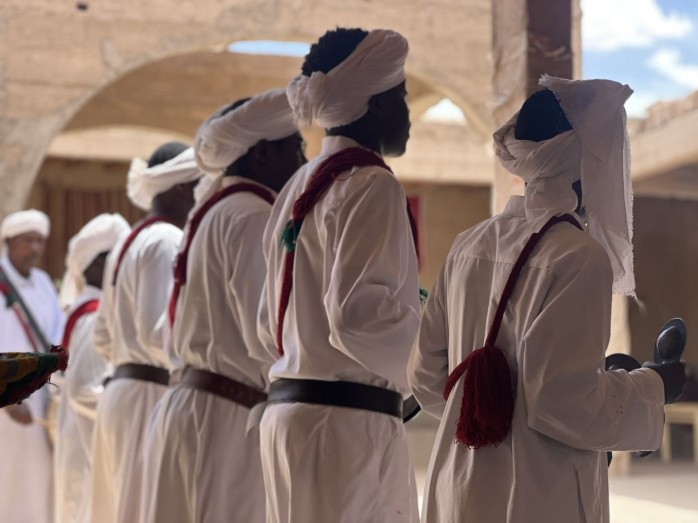
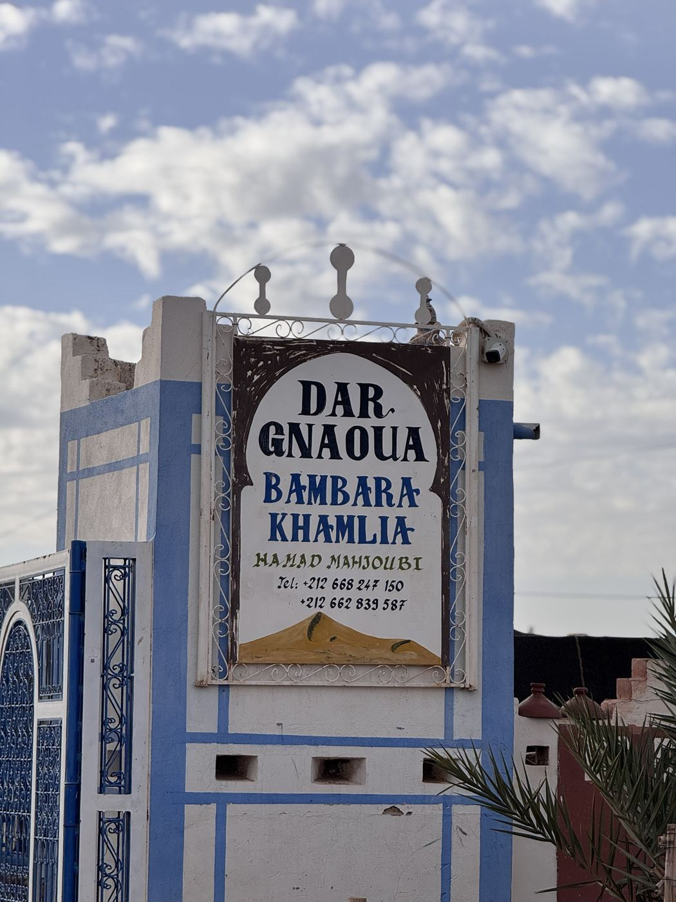
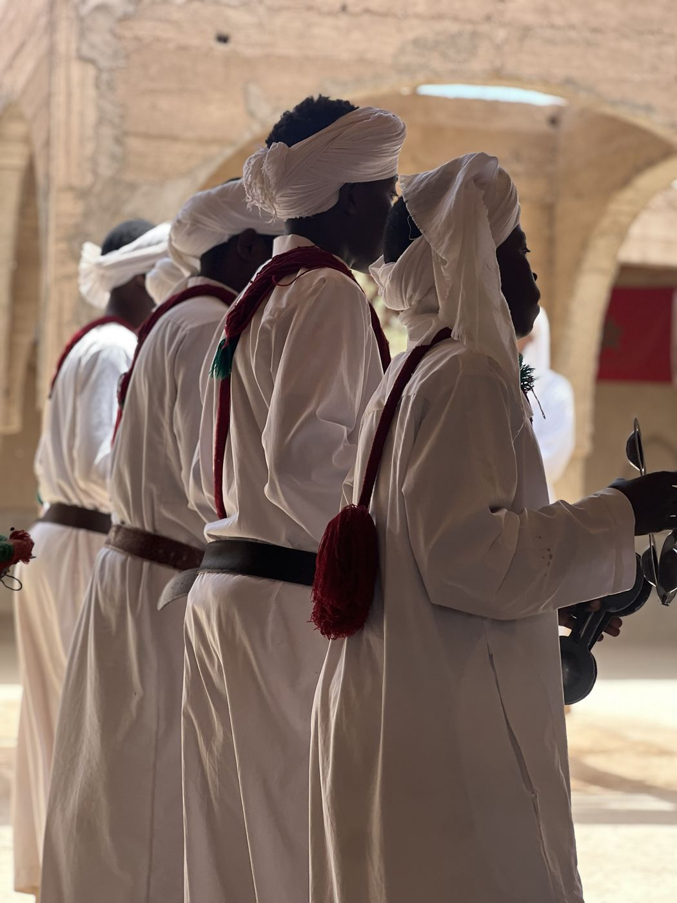

A few kilometres south of Merzouga, at the edge of the great dunes of Erg Chebbi, there is a small village where the music never really stops. In Khamlia, families have kept alive for generations the songs, rhythms and rituals of the Gnawa, a musical and spiritual tradition born from the meeting of West Africa and Morocco.
A visit to Khamlia is one of the most moving moments of a desert trip: you sit on carpets in a simple room, drink mint tea, and the drums and iron castanets start, hypnotic and joyful. In this guide we explain the history of the village and of Gnawa music, the instruments, what a visit looks like and how to make it respectful.

Where is Khamlia?
Khamlia is about 7 km south of Merzouga, on the road that runs along the eastern side of Erg Chebbi, between the dunes and the black stone desert (the hamada). It is a small village of earthen houses, palm trees and gardens, around 30 to 40 minutes from most desert camps by 4×4. It is easy to combine with a day around the dunes, a visit to a nomad family and a medfouna lunch.

The history of the village
For centuries, caravans crossed the Sahara between the great cities of West Africa, such as Timbuktu, and the oases of southern Morocco. Along with gold, salt and goods, these caravans brought people from the regions of today’s Mali, Niger and Senegal, many of them by force. Over time their descendants settled in the oases of the south, became free, and kept their own culture alive.
Khamlia is one of these communities. Its families combined their African heritage with Islam and with the life of the Moroccan desert, and the result is the Gnawa tradition you hear today. The music is, in a way, a living memory of that long journey across the Sahara.
What is Gnawa music?
Gnawa (also written Gnaoua) is both a style of music and a spiritual brotherhood. Its songs mix Arabic, Amazigh (Berber) and words from West African languages. They praise God and the Prophet, tell the story of slavery and freedom, and call on spirits in long night ceremonies.
The rhythm is built on repetition: the same patterns return again and again, faster and faster, until musicians and listeners feel carried away. This is why Gnawa music is often described as hypnotic or trance music.
UNESCO heritage
In 2019, Gnawa was inscribed by UNESCO on the list of the Intangible Cultural Heritage of Humanity. Every year in June, the Gnaoua World Music Festival in Essaouira brings Gnawa masters together with musicians from all over the world.
The instruments
| Instrument | What it is |
|---|---|
| Guembri (or sintir) | A three-string bass lute made of wood and camel skin. It gives the deep melody and is played by the master, the maâlem. |
| Qraqeb | Large iron castanets held in both hands. Their metallic “clack-clack” is the heartbeat of Gnawa music. |
| Tbel | A large drum played with sticks, used for processions and for the most intense moments. |
| Voices and hands | The master sings, the group answers in chorus and claps. |
The musicians often wear white or colourful robes and caps decorated with cowrie shells, another reminder of the African roots of the tradition.
The lila, the night ceremony
The most important Gnawa ritual is the lila (“night”), a ceremony that lasts from evening until dawn. Each part of the night is linked to a colour, a spirit and a series of songs, and incense is burned. Some participants enter a trance as the music speeds up. The lila is traditionally held for healing, blessing or protection. It is a private and sacred event, different from the performances shown to visitors.

What happens during a visit to Khamlia
- Welcome: you are invited into a house or a music room, usually with carpets and cushions on the floor.
- Mint tea: tea is served while the musicians introduce the instruments and the story of the village.
- The music: the group plays for about 20 to 40 minutes. The rhythm builds slowly and becomes very powerful.
- Dancing: at the end, the musicians often invite visitors to dance or to try the qraqeb. Don’t be shy: it is part of the fun.
- Thank you: there is usually no fixed price. Visitors leave a contribution in a basket, or buy a CD or a small souvenir. This money supports the musicians and their families.
You can also walk through the village, with its earthen houses and small gardens irrigated by the old channels, and see how life goes on at the edge of the dunes.
How to visit respectfully
- Ask before filming or photographing people, especially women and children in the village. Filming the performance is usually welcome, but ask first.
- Leave a fair contribution. The musicians make their living from these visits. As a guide, think of what you would pay for a short concert.
- Dress modestly in the village, as everywhere in rural Morocco.
- Remember the history. Gnawa music is joyful, but it also carries the memory of slavery. Listening with curiosity and respect makes the visit richer.
Visit Khamlia with us
Khamlia is part of the day around the dunes on most of our desert tours, together with a nomad family, the hamada and, depending on availability, a medfouna lunch. See our 3-day desert tour from Marrakech, the 3-day Sahara tour from Fes and all our desert tours. Discover the other experiences of the region in things to do in Merzouga.
Frequently asked questions
How far is Khamlia from Merzouga?
About 7 km south of Merzouga, around 10 minutes by car, and about 30 to 40 minutes by 4×4 from most desert camps.
Do I have to pay to visit Khamlia?
There is usually no fixed entrance fee. Visitors leave a contribution to the musicians or buy a CD or a souvenir.
How long does a visit last?
About 45 minutes to an hour, with tea, the explanation of the instruments and the music.
Can children visit Khamlia?
Yes. Children usually love the music, the rhythm and trying the castanets. Read our tips for Morocco with kids.
Is Gnawa music religious?
It is spiritual: the songs praise God and the saints and are part of healing ceremonies. The performances for visitors are a cultural concert, open to everyone.
Keep reading: Medfouna, the Berber pizza · Visiting a nomad family · Things to do in Merzouga